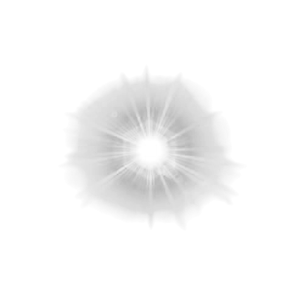
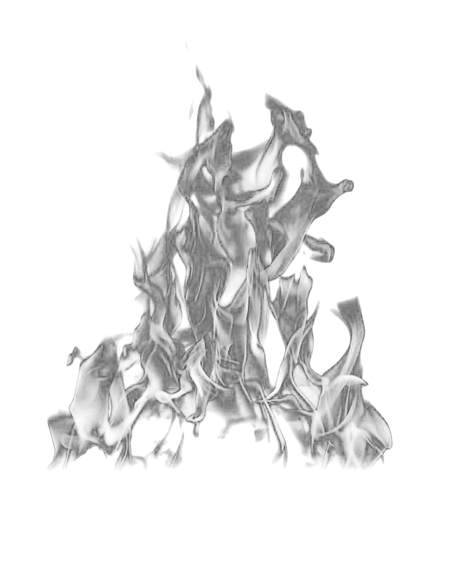
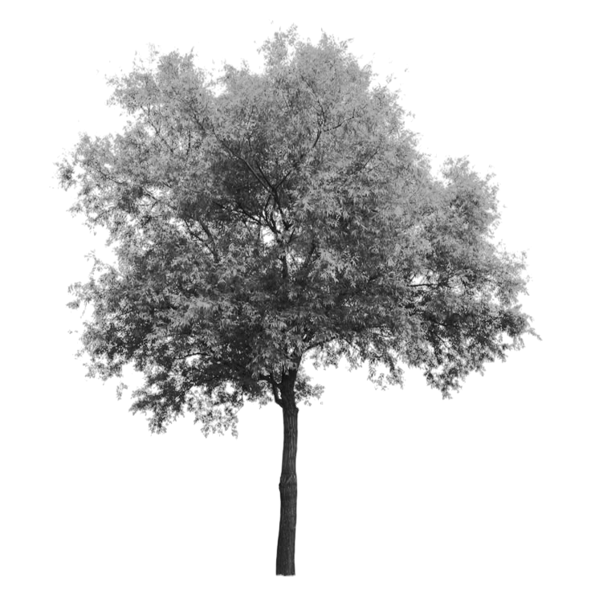
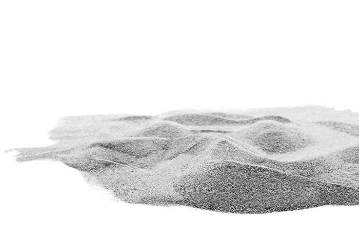
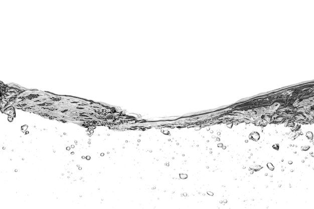
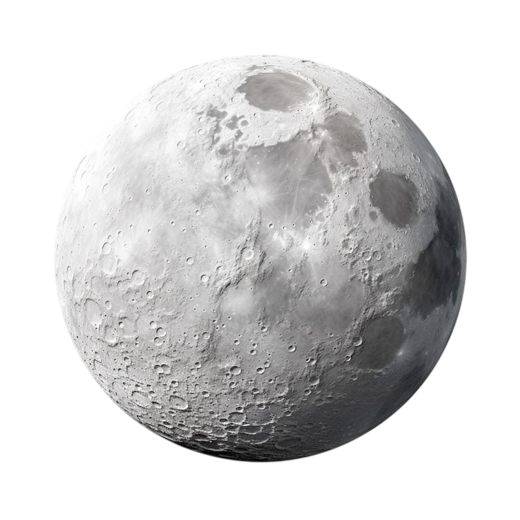

bright, active, strong, warm qualities

heat, passion, expansion

growth, flexibility, upward movement

stability, grounding, support

flow, adaptability, downward movement
structure, clarity, firmness

dark, soft, passive, cool
NEXT